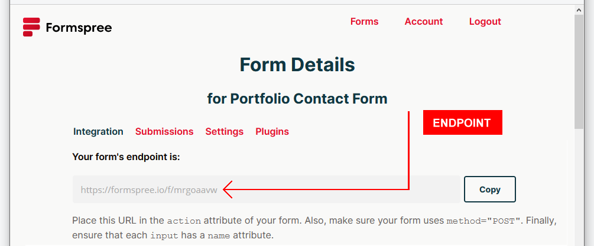

Updating your Website Content
Learning Goals
At the end of this Tutorial you will be able to:
- Update the content of a website template with your own text, contact details and CV.
- Add your own website logo, background images and videos, and favicon.
- Add your unique Google Analytics ID, cookie privacy and contact form details.
- Add extra web pages to your site.
Introduction
In this project you will update your personal website, based on the material you covered in these previous Tutorials:
Updating ‘Mary Smith’ and the meta tags
Here are the first steps you need to take:
- In VS Code, open all six web pages.
- Replace the name ‘Mary Smith’ with your own name, or the name of your organisation.
- Are you happy with the content of the title and description tags (the so-called 'meta tags') in the head of each web page?
If not, feel free to change the sample text within the tags in each web page.
You may find the links below helpful:
Updating your social media contact points
In the footer of all six sample web pages are a number of social media contact points with icons.
- Delete the social media contact points and their icons you do not want to use.
To remove the Facebook link, for example, delete the relevant <li> ... </li> tag pair and everything inside it.
- For the contact points you want to use, replace the hyperlink destination of "#" with the actual hyperlink. See the example below for Linkedin.
- For your GitHub account, enter your hyperlink in the format https://github.com/mywebsite as shown below.
Adding your CV
In the website template there is sub-folder named assets/pdfs. This is intended for storing any Adobe Acrobat files you may want to link to on your website.
In this folder is a file named cv-sample.pdf. There is a link to this file on your website 'home page'.
Replace this PDF fle with your own CV. You can name your CV file with the same cv-sample.pdf filename. If your want you CV file to have a different file name, you will need to change the link to your new file name, such as mary-smith-cv.pdf, for example.
Alternatively, if you don't want to include a CV on your website, delete both the text and link from the template 'home page.'
Adding your website logo
The sample logo shown below is only a placeholder. Please replace it with your own logo.

Your logo should be about 200px wide and about 40px high. Anything much larger will not look good work on mobile screens.
Whatever the size of your own logo, ensure its width and height are set exactly in the HTML of all six web pages. See below.

Otherwise, your logo will be distorted.
Creating a website logo
If you do not have graphic or image editing software installed on your computer, here are two websites that will help you create a logo:
- Free Logo Maker
- Free Logo Design
Another option is to use the BeFunky free online image editor. Follow these steps.
- Go to the BeFunky website, choose Create and then Graphic Designer.
- On the next screen, choose Blank Canvas, enter a Width of 200px and a Height of 40px, and then click the Create button.
- On the next screen, at the very bottom, increase the view size to about 400%

- All the options you need to create your logo are in a menu at the left of the BeFunky screen.
- When finished, click Save at the top of the screen, click Computer, save your logo in png format, and copy it to your websites/assets/img sub-folder.
That's it. If you save your new logo with the same filename as the template one (website-logo.png), you won't need to change the image name in your six web pages.
Adding your Google Analytics ID
In the Setting Up Google Analytics Tutorial, you obtained a unique Google Analytics ID just for your website.
In your template 'home page', just before the closing </head> tag, you can see the Google Analytics code with a placeholder ID inserted twice.
You need to replace this with your own Google Analytics ID.
All the relevant steps for obtaining your Google Analytics iD are contained in the link below.
Viewing a Google Analytics Tracking Code
In the other five template web pages, you need to paste the full Google Analytics script, and not just the unique ID.
Without the correct ID, Google Analytics cannot track visits to your website.
Adding your cookie privacy code and message
In the Bootstrap Privacy Page Tutorial, you used the online service from Insites to generate a privacy and cookie consent 'pop-up' message in JavaScript.
You copied-and-pasted the two items you need for this code to work to the bootstrap-privacy-template.html file in your websites/bootstrap sub-folder.
These two items are:
- A CSS stylesheet link that goes in the <head> of the web page.
- Some JavaScript code that goes at just before the closing </body> of the web page.
You need to copy these two items from your bootstrap-privacy-template.html to all six of your web pages.
Follow these steps:
- In VS Code, in the <head> of your bootstrap-privacy-template.html page, copy the stylesheet link that controls the appearance of your cookie pop-up message - its colours and location on your web pages.
The stylesheet link will look as shown below.
- Paste this CSS link into all six of you web pages, just before the Google Analytics code.
- Next, you need to copy the JavaScript code that creates the pop-up message.
In the bootstrap-privacy-template.html page, copy the JavaScript from the bottom of the page.
It will look as shown below.
- Paste the code in all six of your web pages.
Ensure that the last line of the JavaScript code links to the privacy web page on your website.
Because your web pages use Google Analytics, you are legally required to add this cookie privacy message with its link to your privacy web page.
Updating your contact form endpoint
In the Bootstrap Form Tutorial, you created an account with the formspree.io online service to process messages entered to a contact form.
Formspree provided you with a so-called endpoint that is unique to your form and which ensures you receive any messages entered in the form at your email address.
You would have added this unique endpoint in your bootstap-form.html web page in your websites/bootstrap sub-folder.

You need to update the form in the contact page of your website template.
- In VS Code, open the index.html file in your /contact sub-folder.
- Update the form’s action value by copying-and-pasting your unique endpoint code. See the example shown below.
Adding a favicon
A favicon is a small icon (really a set of icons for different screens) that is displayed within the browser tabs and bookmarks bar of a web browser. See the examples below.
A favicon help users visually identify your web pages more easily within browser tabs, bookmarks, shortcuts, and address bars.
You need to update the form in the contact page of your website template.
- Create a square PNG image of at least 70x70. Your image should be 260x260 or more for best results.
- Go to the free Fav Icon Generator website at the following web address:
https://favicon.io/
- Choose the PNG -> ICO option.
- On the next screen, drag-and-drop the image you want to use as your favicon, and then click the Download button.
- Copy your downloaded ZIP to the assets/img sub-folder of your 'main' website folder.
- Unzip the ZIP file to create the following files.
- android-chrome-192x192.png
- android-chrome-512x512.png
- apple-touch-icon.png
- favicon-16x16.png
- favicon-32x32.png
- favicon.ico
- site.webmanifest
- Copy-and-paste the following code to your 'home page' and your privacy page, to just below the description meta tag in the head.
<link rel="apple-touch-icon" sizes="180x180" href="assets/img/apple-touch-icon.png">
<link rel="icon" type="image/png" sizes="32x32" href="assets/img//favicon-32x32.png">
<link rel="icon" type="image/png" sizes="16x16" href="assets/img//favicon-16x16.png">
<link rel="manifest" href="assets/img/site.webmanifest">
For your other web pages, the links will be slightly different.
<link rel="apple-touch-icon" sizes="180x180" href="../assets/img/apple-touch-icon.png">
<link rel="icon" type="image/png" sizes="32x32" href="../assets/img//favicon-32x32.png">
<link rel="icon" type="image/png" sizes="16x16" href="../assets/img//favicon-16x16.png">
<link rel="manifest" href="../assets/img/site.webmanifest">
View the favicon in your web browser to verify it works correctly.
Adding more web pages
To add another web page to your website template, follow these steps.
- Create a new sub-folder to store your new web page.
For example, to create an 'About Me' page, begin by creating an about-me sub-folder in your 'main' websites folder.
- Use another web page on your site as a template for your new page.
- For example, if you want your new page to have a hero block with a background image, open your javascript/index.html page in VS Code and save it as index.html in your new about-me sub-folder.
- If you don't want a hero block on your new page, open your contact/index.html page in VS Code and save it as index.html in your new about-me sub-folder.
Your new page will have now this web address when uploaded to GitHub:
https://mywebsite.github.io/about-me
- Update the content of the web page as required.
To use a multi-column layout, copy-and-paste from the bootstrap-practical-layouts.html file you created in the Practical Bootstrap Layouts Tutorial to help you get started.
- You will need to add a hyperlink to your new web page in the menu at the top of all your pages.
- In your 'home' and privacy pages, located in your 'main' websites folder, the new menu link will look as follows.
- In all your other web pages, which are located in sub-folders of your 'main' websites folder, the new menu link will look as shown below.
Upload your website to GitHub
The final step is to upload your website pages and folders to GitHub.
- Sign in to your GitHub account and, at the left of the screen, click the name of the repository that holds your web pages.
- On the next screen, click the Add file button and then choose Upload files from the dropdown list.

- In File/Windows Explorer on your computer, display your websites folder and then drag-and-drop the following files and sub-folders to the GitHub tab in your web browser.

- Scroll down to the bottom of the GitHub screen, and accept or edit the short message (Add files via upload) in the Commit changes box.
Finally, click the green Commit changes button to upload your files and folders.
Your web pages are now published on GitHub. Your Home page has a web address similar to the following, where username is the username you have chosen for your GitHub account:
https://username.github.io/index.html
or, simply:
https://username.github.io
It may take a few minutes for your uploaded files to appear on GitHub.
Return to Contents.
Updating your social media contact points
In the footer of all six sample web pages are a number of social media contact points with icons.